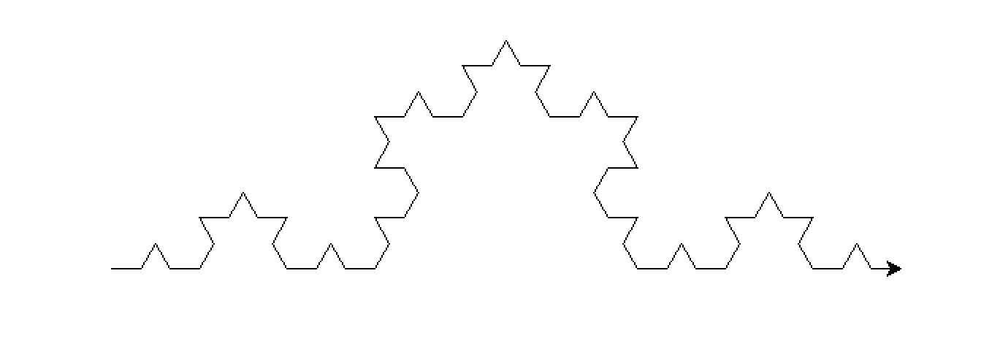
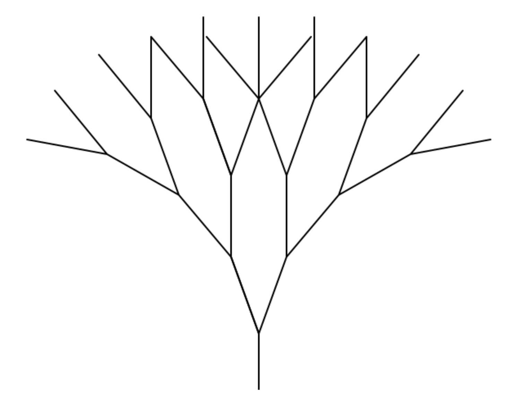

Fractal Fun!
Koch Curve
Basic Curve: kotch_curve(t, 4, 20)

Modified Curve draw_kotch(t, 5, 15)
Modification 1: Using random colors at every segment drawn by the turtle
Modification 2: Changing angles, such that a kotch_curve is formed through
20 degree left rotations, instead of 60 degree rotations.
def draw_kotch(t, depth, length):
r = random.randrange(255)
g = random.randrange(255)
b = random.randrange(255)
if depth == 1:
t.pd()
t.fd(length)
else:
t.color(r, g, b)
draw_kotch(t, depth - 1, length)
t.lt(20)
draw_kotch(t, depth - 1, length)
t.rt(120)
draw_kotch(t, depth - 1, length)
t.lt(20)
draw_kotch(t, depth - 1, length)
Sierpinski Triangle
Basic Sierpinski Triangle: draw_sierpinski(t, 5, 200)

Modified Sierpinski: draw_sierpinski(t, 3, 5)
Modification 1: The pensize will be twice as thick for the bottom two Sierpinskis.
Modification 2: Instead of dividing by 2, the length of the Sierpinski will double
to form the next depth
def draw_sierpinski(t, depth, length):
num = 0
if depth == 1:
t.pd()
triangle(t, length)
else:
t.pensize(2)
draw_sierpinski(t, depth - 1, length * 2)
t.pu()
t.fd(length * 2)
draw_sierpinski(t, depth - 1, length * 2)
t.pu()
t.bk(length * 2)
t.lt(60)
t.fd(length * 2)
t.rt(60)
t.pensize(1)
draw_sierpinski(t, depth - 1, length * 2)
t.lt(60)
t.bk(length * 2)
t.rt(60)
Trees
Basic Tree: tree(t, 4, 5, 20)

Modified Tree: tree(t, 7, 15, 20)
Modification 1: The width of the tree (excluding the root) is random from 0-4
Modification 2: The bottom of the tree is brown, while the uppermost additions are green.
def tree(t, depth, length, angle):
if depth == 1:
t.fd(length)
t.bk(length)
else:
t.pensize(5)
t.color("brown")
tree(t, depth / depth, length, angle)
t.fd(length)
t.lt(angle)
r = random.randrange(4)
t.pensize(r)
t.color("green")
tree(t, depth - 1, length, angle)
t.rt(angle * 2)
tree(t, depth - 1, length, angle)
t.pensize(r)
t.color("brown")
t.lt(angle)
t.bk(length)